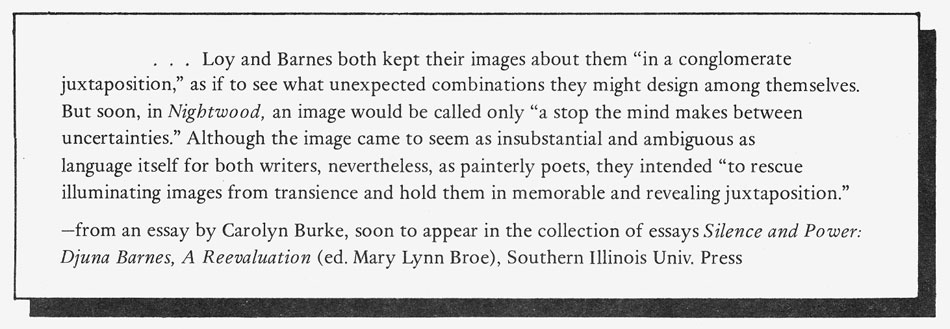

.endnotes
EDITOR'S NOTES:
This issue of
HOW(ever)
focuses on the concept of PALIMPSEST, a word given fresh meaning for women writers through H.D.'s use of it as both identification and practice in her own work.
"Palimpsest: writing 'on top of' other writing which, through time and benign or active neglect, has been imperfectly erased, defaced, lost;
this
moment re-inscribed over the faded or dimming messages of a collective female experience. . . . The exciting part of the palimpsest notion is that some of the imperfectly erased writing from ancient female texts and myths still comes through--bits and pieces of language, single words, alphabet fragments whose traces and marks suggest the challenge of coded hermetic messages, both from recovered past writings
and
from one's own unconscious."*
HOW(ever) celebrates H.D.'s one-hundredth birthday with this issue of writings in which the sign, the mark, the utterance of the unconscious comes through into present voice, with ancient echoes hovering. Honoring the works of H.D. this fall/winter: the
Emily Dickinson / H.D. Dual Centennial Colloquium
at San Jose State Univ., Oct. 22-25, with Susan Stanford Friedman, Barbara Guest, Lucille Clifton, Carolyn Kizer and Sandra Gilbert speaking at opening sessions (all events to be held in the SJS Student Union); an HD Centenary 1986 special issue of AGENDA (London), edited by Claire Buck of Keynes College, the University of Canterbury, and Diana Collecott, The University of Durham; a special issue of
The Iowa Review,
devoted to writing inspired by H.D.'s life and works, edited by Adelaide Morris, due in December.
New works to look for, vividly re-inscribing the text: Offering::Alisgolvtanvhi, by Diane Glancy, from Holy Cow! Press, Box 2692, Iowa City, IA 52244; Figure Vocative, a new translation of the French poet, Anne-Marie Albiach, from Moving Letters Press, 17, rue du fbg. Saint Denis, 75010, Paris, France; Anne Waldman's dynamic new taped live performance, "Crack in the World," from Sounds True, 1825 Pearl Street, Boulder CO 80302; and "Two Stein Talks," by Lyn Hejinian, in Temblor No. 3, edited by Leland Hickman, 4624 Cahuenga Blvd. No. 307, North Hollywood, CA 91602. Anna Cusenza is a Sicilian-American visual artist living in San Francisco. Since the early 1970s, her media have included spray-paint, the electrostatic process (Xerox, etc.), Polaroid high-speed b/w photography and infrared transparencies. CIPHER, a work-in-progress, was first conceived as a handmade book and evolved into a series of 30"x 40" photoprints to be exhibited as a walk-through book.
* From "Line. On the Line. Lining Up. Lined with. Between the Lines. Bottom Line., " by Kathleen Fraser, to be published in the forthcoming collection of essays The Line in Post-Modern Poetry: A Symposium (edit. by Henry Sayre and Robert Frank), Univ. of Illinois Press.
HOW(ever)
is available in a third series of four numbers. Subscriptions for Volume Three cost $7 for individuals and $9 for libraries and institutions. For libraries interested in purchasing the complete series, we have a limited number of archival sets available. Single copies are not for sale, except on a limited local basis, nor are free sample copies available. Subscription checks should go to Frances Jaffer, 871 Corbett Ave., San Francisco, CA 94131. Editorial correspondence should go to Kathleen Fraser, 554 Jersey St., San Francisco, CA 94114. 
go to this issue's table of contents
|